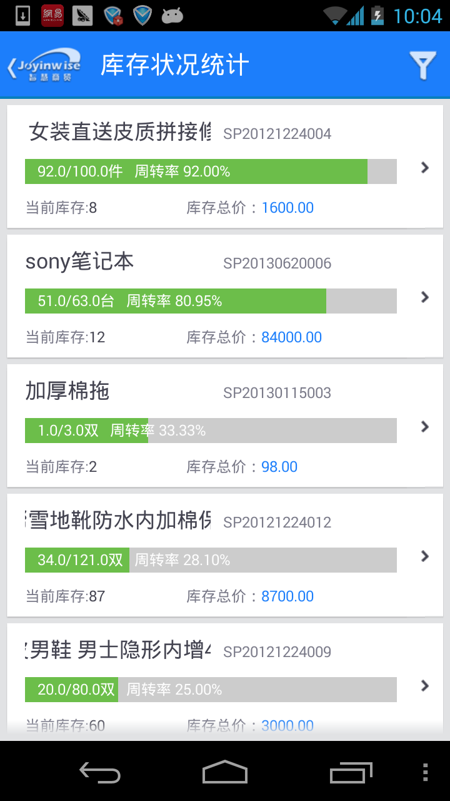

智慧商贸自推出以来，产品保持着较快的更新速度，同时产品的功能也渐渐形成了独树一帜的风格特色。近日，智慧商贸的最新版本v2.2也已经在9月初正式发布，新版本在功能应用和界面设计上都有着更进一步的优化。那么，对于一款进销存软件行业内的后起之秀产品，此次的版本升级将带给我们怎样的体验？下文我们就智慧商贸v2.2的进行简单的评测。

智慧商贸v2.2简评
智慧商贸是安徽兆尹科技推出一款针对中小型批零兼营商贸企业的管理软件，集进货、销售、库存、财务和客户关系管理等多功能的一体化解决方案，能够提供日常业务经营管理各个环节的执行和监控，促使业务流程规范化。
智慧商贸v2.2信息概况
软件名称：智慧商贸
开发商：兆尹科技
软件版本：v2.2
适用平台：PC端、Android/iOS移动端
软件大小：3.08M
下载地址：http://app.joyintech.com/
美观、快捷流畅的界面设计
从这次的版本号我们就能看出智慧商贸Android版和iOS版已经“同步”了。登陆进去，Metro设计风格的主界面相当引人眼球。智慧商贸的主界面将产品的功能均以“卡片”形式呈现，触碰一下即可启动。页面的左上方为“系统设置”按钮，右上角为“关闭”按钮；界面上方往左滑动可轻松切换至7天内的销售额统计图。页面下方可自主添加快捷方式让用户操作起来更便捷。
Metro风格的界面设计
在保持操作轻量和内容为主的前提下，智慧商贸v2.2的主界面适当增加了界面视觉层次和图形的展现。主界面正中间设有绿色、蓝色、紫色、橙色、红色及湖水蓝等六个不同颜色方块，分布代表着智慧商贸的“慧管货”、“慧管账”、“慧管客”、“慧分析”、“慧服务”及“基础资料”六大功能的启动按钮，鲜艳的色彩和方块的搭配使得界面功能分区明显，更利于用户对内容的辨识以及使用。
界面上方为销售走势图、中间为功能区域，下方为自定义快捷方式区域
新版功能细节设置更贴近用户需求
库存的准确性对于企业安排生产计划、采购计划都十分重要。智慧商贸作为一款进销存软件，在帮助企业用户做好库存盘点工作、保障库存数据准确性方面表现出众。新版智慧商贸进一步优化了库存管理功能，尤其是库存盘点功能，新添了“库存盘点”和“历史盘点单”内容，不仅可以智能矫正库存数据以提高库存的准确性，还能查看相关商品盘点记录。
智慧商贸v2.2优化库存盘点功能

库存状况统计的全新界面更利于用户浏览及查找
新版盘点功能的“新增盘点单”
智慧商贸v2.2新添“历史盘点单”功能
“慧分析”功能可为用户提供商品销售和利润收支等内容的对比与分析，智慧商贸v2.2新版的报表统计功能让经营状况一目了然，其中新添的“经营状况”报表统计能让用户瞬间获知特定时间段内的“销售收入”、“进货支出”、“销售毛利”、“库存金额”、“应收金额”及“应付金额”等各项指标数值，让用户随时随地掌握经营状况。
智慧商贸v2.2新添“经营状况”报表统计功能
经营状况列表让用户轻松掌握各项经营数值
支持移动端的软件大多数都会被用户追问是否支持离线功能，因为这在很大意义上决定了软件的可使用程度。智慧商贸v2.2新添的支持离线功能可以说是新版功能的重要亮点，也就是说用户在没有网络的情况下也能快速流畅地操作，这个功能的实现，能够从根本上解决软件受网络限制的困扰，真正意义上的实现随时随地的移动管理。当然，用户离线状态下操作的所有数据都会在下次的联网状态下自动或手动更新，保证数据的无缝对接。
智慧商贸v2.2支持离线功能，数据无缝式同步更新
智慧商贸v2.2的功能细节贴心程度让人大赞，其中值得一提的就是“慧服务”提供了更多资讯服务，添加的“创业故事”及“行业资讯”的推送服务，让用户在快速高效的管理同时能及时知晓行业最新的信息咨询和发展动态。
智慧商贸v2.2提供更多行业资讯服务
轻量级操作，简单易用
在智能机横行的时代，“触摸”操作为王，尽可能的减少操作层级显得尤为重要。智慧商贸的横向浏览及操作让信息架构更加扁平，有效地避免了各种的全屏页面跳转。
同时，合理安排功能信息的主次，用户操作起来更省力。智慧商贸的“慧管货”、“慧管账”、“慧管客”分别对应着企业用户的商品管理、财务管理及客户管理等相关功能操作，功能分区明显且分化细致，操作起来更加简单易用。
总结：一款软件的优秀程度主要是用户的综合体验决定的，界面设计的美观度、功能的丰富性和实用性、操作的简易度和流畅度都直接影响着用户体验。通过一番体验，智慧商贸v2.2在既界面设计方面注重内容和轻量操作，也进一步的完善功能体系，促使功能操作和功能细节设置都更加贴近用户的使用习惯和需求，如“离线支持”和“优化盘点”等功能，能从根本上辅助用户高效使用智慧商贸。当然，精益求精，智慧商贸在针对具体行业的功能细分方面还有待加强，希望智慧商贸后续的升级版本能进一步完善功能系统，为用户带来更好更全面的使用体验。